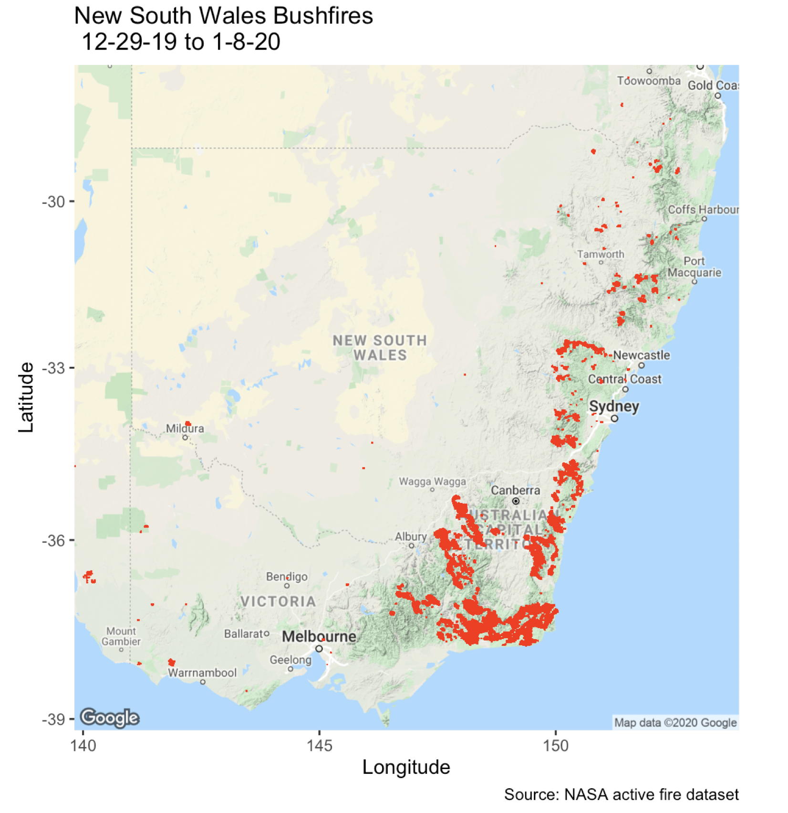
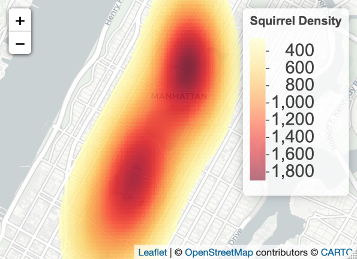
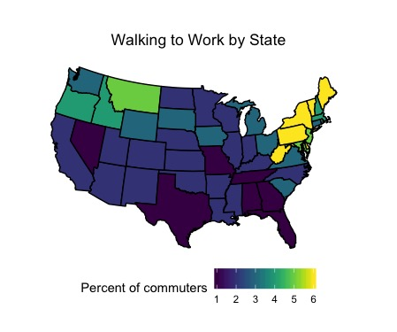

Tidy Tuesday
 Screenshot of mapper
Screenshot of mapper
Here are my contributions to #TidyTuesday
2020
Visualization of the wildfires in Australia’s New South Wales province.
Week 1 - Australlian Wilfires

2019
Density estimation of squirrels in Central Park.
Week 44 - Squirrel Census

Percentage of commuters who walk to work by state.
Week 45 - Modes of Commuting

Steven DiFalco
Landscape Ecologist and Geographer
My interests include botany, geography, human dimensions, and landscape ecology.